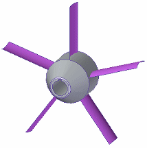
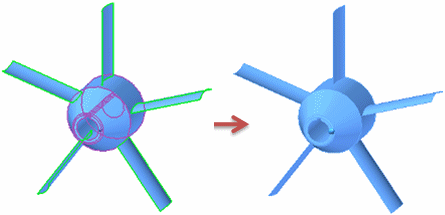

Preparing and selecting united bodies for studies
You can create a study for a part, sheet metal, or assembly model with T-shaped junctions using united bodies. The process of preparing and selecting a united body to use in a study differs for assembly and part models.
Preparing and selecting united bodies in assemblies
Use this process to define and select the united bodies for an assembly study.
-
Use the Extend command to extend the surfaces into the solid so that they intersect. Then you can use the Trim command to trim the surfaces so they just touch the surrounding faces.
-
Create a collection of objects as a united body using the Simulation Geometry tab→Surfaces group→Unite Bodies command . You can select bodies, surfaces, design bodies, and other united bodies created in the assembly or in an occurrence.
-
Create the new study, selecting Mixed and General Bodies as the mesh type, and then selecting the united body from the Unite Bodies node in PathFinder.
You also can use the Define command to add a united body to an existing study.
-
Select one or more united bodies from the Simulation study navigator pane→Simulation Geometry collector→Unite Bodies node. It is not available on the Assembly PathFinder.
If you need to make changes to any of the constituent parts in a united body, you can use the Simulation Geometry tab→Surfaces group→Recover Bodies command to deconstruct it for editing.
For practice, see Activity: Simplify a sheet metal assembly.
To learn how you can use united bodies to improve meshing in an assembly model, see Assembly best practices for simulation.
Preparing and selecting united bodies in a part or sheet metal model
Use this process to create a part or sheet metal study using a united body.

-
Before creating a united body from surfaces or mid-surfaces and a solid, use the Surfacing tab→Surfaces group→Extend command to extend the surfaces into the solid, so that they intersect. Then you can use the Trim command to trim the surfaces, so they just touch the surrounding faces.
-
Use the Simulation tab→Geometry group→Unite Bodies command to select all of the surfaces and solids you want to unite. You can select design geometry from PathFinder.
The result of the Unite Bodies command is to make the surfaces and solids a single object for the purpose of analysis.
Example:
-
Create the new study, selecting General Bodies as the mesh type, and then selecting the united body from the Unite Bodies node in PathFinder.
You also can use the Define command to add a united body to an existing study.